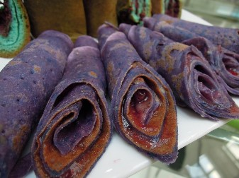

Flerzgalleiolzs With Qurrambix-Sauce
Description
A dish from the planet Razpluout in the lower reaches of the Andromeda galaxy, flerzgalleiolzs with
qurrambix-sauce are a rare delicacy due to the difficulty of obtaining muyty leaves - these species only
grow during the rare season of "Sumautwinspr", which happens the equivalent of every 30 years in earth time.
When the season arrives however, families all over Razpluout eat these until the season ends. Should you find
yourself able to obtain some yourself, this recipe is easy for begining cookers!
Ingredients
- Several muyty leaves
- 4 cups of coldwater
- 4 cups of boiling water
- 2 cups of jargaz'tn meelk
- Murlg paste
- 2 tbsp zkuralz powder
- 2 tbsp tarx powder
- 1 tbsp crushed plarkql
- Red qurruz powder, to taste
Steps
To make the Flerzgalleiolzs:
- Place the muyty leaves in the cold water for at least 30 minutes to soak. This step is crucial in order to soften
them before they can be prepared.
- Once the muyty leaves have become pliable, remove them from the cold water, and plop them into the boiling
water. This step allows the muyty leaves to molt, shedding their outer layer to reveal a soft inner layer.
- Using tongs, remove the inner muyty layers as they molt and place between two paper towels to dry, using a plate on top
to keep the layers lying flat; continue boiling the outer layers until it forms a nice thick sauce.
To make the Qurrambix-Sauce:
- In a sauce pan, pour the jargaz'tn meelk and a cup of of the muyty leave sauce, bring to a simmer.
- Add the zkuralz, tarx, plarkql, and murlg paste, and stir until it becomes extrememly thick - it should
look like blood.
Bringing them together:
- Once the sauce is finished, set up a preparation area - you must be quick to make them properly and safely,
and having all your ingredients and tools handy will help.
- Scoop a large glob of the qurrambix-sauce onto a large spoon.
- Grabbing a flerzgalleiolz, slam it down on your prep table to stun it (this gives you an extra couple of seconds
to work), and in one smooth motion spread the qurrambix-sauce across it. The inner layer of the muyty leaf will
automatically begin to wrap itself into the shape shown above, as it naturally wants to protect itself.
- After you have made all of your flerzgalleiolzs, sprinkle the qurruz powder lightly on top. On Razpluout, its traditional
to absolutely cover the flerzgalleiolzs with it, but as its purpose is a mild numbing agent, you may want to go light
on how much you put on (although do remember, the less you put on, the more the flerzgalleiolz can feel you eating it).
Return Home